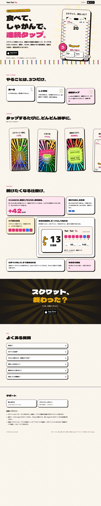
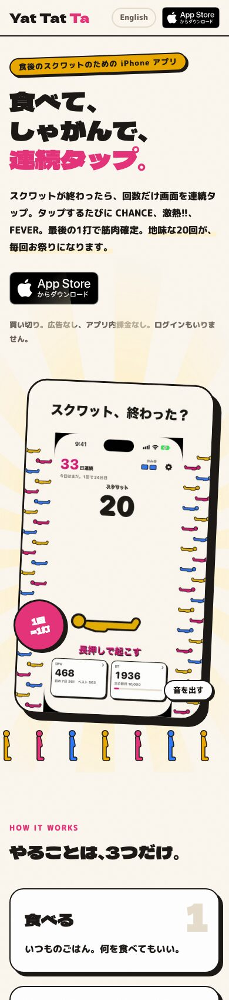

LP を作り直し、見た人とボタンを数える
開発者の注文
待っている間に
LP を充実させたい。
スクリーンショットや30秒動画などのメディアアセットを充実させ、見ているだけで楽しいような LP デザインにして（Pinterest と Dribbble の LP のまとめを参考に）。また、ユーザーのコンバージョンを測定できるようにして。
01 / why
リンクカードの行き先が、サポートのページだった
LINE や X のリンクカードを押した人は、LP に移ります。ところが、そこにあったのは問い合わせ先とプライバシーポリシーへのリンクだけのサポートのページでした。カードで興味を持った人が、何のアプリかも、どう楽しいのかも分からないまま帰っていく。
このページは App Store Connect のサポート URL でもあります。Apple はサポート URL に問い合わせ先を載せるよう求めているので、サポートの欄はページの下に残し、上を宣伝のページに作り替えました。
参考に挙げてもらった Pinterest と Dribbble のまとめは、ログインや JavaScript がないと中身が出ず、こちらからは開けませんでした。アプリの LP によくある型（動画の入った冒頭、使い方の数歩、スクリーンショットの帯、機能の箱、くり返すボタン、よくある質問）で組み、見た目はアプリの「紙の地に太い枠とずらした影」で振り切っています。
02 / decisions
決めたこと
- 決定 計測は Google アナリティクス 4（開発者が決定、2026-10-09）。公開ページの「外のサービスへ送らない」という方針は、LP について変える。送り先と送る情報は、プライバシーポリシーの「公開ページで外部に送られる情報」に書く（電気通信事業法の外部送信規律）。
- 決定 動画は LP 用の30秒を、日本語と英語で新しく作る（開発者が決定、2026-10-09）。
- 決定 合言葉を「食べたら、しゃがんで、叩く。」から「食べて、しゃがんで、連続タップ。」に改める。「叩く」では、初めての人に何を叩くのかが分からない。「食べたら、しゃがんで、連打。」も比べたうえで、いちばん思い浮かべやすいものを選んだ（開発者が決定、2026-10-09）。LP、リンクカード、動画の最後の画面、共有の文はすぐ、App Store のサブタイトルとアプリの中（はじめての幕、チュートリアル、通知）は 1.2 から。英語の「Eat. Squat. Tap.」は変えない。リンクカードは絵柄の版を 2 に上げ、前の画像を使い回さないようにした。
- 提案 App Store のボタンは Apple の公式のバッジを使い、ページに同梱する。Apple のロゴを使った自作のボタンは、マーケティングのガイドラインで認められていない。Apple のサーバーから毎回読み込むと、見た人の情報が Apple にも送られる。
- 提案 App Store へのリンクにキャンペーンリンクの印（pt と ct）を付け、App Store Connect の App 分析で、LP のどのボタンから来た人が実際に入れたかまで見る。GA4 で数えられるのは「ボタンを押した」まで。
- 提案 EEA、英国、スイスから開いた人には Cookie を使わない（同意モード）。広告の機能は切る。
- 提案 リンクカードから LP に移すとき、
utm_source=share_cardを付けて、カードから来た人を見分ける。 - 提案 プライバシーポリシーのページは、今までどおり外のものを読み込まない。
03 / look
できあがり


見本は、動きを減らす設定で撮ったもの。ふだんは見出しが1行ずつ落ちてきて、動画の後ろで光が回り、下をスクワットマンが行進し、節が下から出てきます。
- 冒頭：「食べて、しゃがんで、連続タップ。」と、30秒の動画。「買い切り。広告なし、アプリ内課金なし。ログインもいりません。」
- 3歩：食べる、しゃがむ、叩く。
- スクリーンショット：App Store と同じ6枚を、横に流す。
- 機能：演出、連続記録と休み券、ドパ、共有カード、ログインなし、今日まだ通知。
- 帯：黒地に「スクワット、終わった？」と、もう一度のバッジ。
- よくある質問とサポート：料金、ログイン、機種変更、回数、電波、対応機種。その下に問い合わせ先と、記録とアカウントの説明。
04 / video
30秒の動画
SNS 用の縦動画は、叩き切って「今日もお疲れ！」が消えたところで終わる24秒でした。LP 用は、その直後に出る共有の誘いを4.5秒見せてから終えます。「叩く、派手になる、FEVER、筋肉確定、カードにして貼れる」が29秒前後に収まりました。
作り方は SNS 用と同じ ios/Design/reel.sh で、言語と種類を選べるようにしました（reel.sh ja lp、reel.sh en lp）。英語の帯の文字は、日本語と同じ大きさでははみ出したので、短く言い直して少し小さくしました。日本語の最後の帯も、最初の「今日の記録は、カードにして貼れる」がはみ出したので「記録は、カードで貼れる」に縮めています。
録ったままの動画は1本 33MB あります。LP には 540 × 960 に縮め、1本およそ 4.3MB にして載せました。音は最初は出さず、「音を出す」を押した人だけに流します。
05 / measure
何が数えられるか
| 段階 | どこで見るか | 中身 |
|---|---|---|
| LP を見た | GA4 | page_view。流入元（X、LINE、検索、リンクカード＝share_card）ごと |
| 動画の音を出した | GA4 | video_sound_on |
| App Store のボタンを押した | GA4 | app_store_click。押した場所（上の帯 bar、冒頭 hero、下の帯 cta）ごと。キーイベントにして、LP のコンバージョンとして見る |
| App Store のページを見た、入れた | App Store Connect の App 分析 | キャンペーン（ct=lp_ja_hero など）ごとの、ページの表示、App の入手、売上 |
06 / implementation
作ったもの
- 1.
firebase/public/index.html、en/index.html、lp.css、lp.js
LP の本体。書体は Google Fonts の Dela Gothic One と M PLUS Rounded 1c。動きを減らす設定では、演出を止める。 - 2.
firebase/public/media/
30秒の動画と最初のコマ、スクリーンショット12枚（webp）、共有カードの見本、LP の OGP 画像、公式の App Store バッジ。合計およそ 11MB。 - 3.
ios/Design/reel.sh、compose_reel.py、AppModel+Demo.swift
LP 用と英語の動画を作るため。SNS 用の動画の作り方は変えていない。 - 4. プライバシーポリシーに「公開ページで外部に送られる情報」
Google アナリティクスと Google Fonts の、送り先、送る情報、目的、止め方。 - 5.
functions/src/page.js：リンクカードから LP へ移すとき utm を付ける。firebase.json：media のキャッシュ
関数のテストは8件すべて通った。
08 / released
出した
GA4 の測定 ID（G-R8RS8DE6MW）と App Store Connect のプロバイダ ID（122127746）を lp.js に入れ、開発用で確かめてから本番に出しました（2026-10-09）。GA4 は本番の LP（yat-tat-ta.web.app）でだけ読み込むようにし、開発用や手元で開いた分が数字に混ざらないようにしています。プロパティの業種は「美容・フィットネス」、拡張計測機能はページビュー、スクロール、離脱クリックを有効にしました。
開発者が iPhone で本番の LP を開き、App Store のバッジを押すと、GA4 のリアルタイムに page_view と app_store_click が届きました。動画の再生は数えない（開発者が決定）。YouTube への埋め込みも検討しましたが、傾いた枠で音なしに流す演出が作れず、プレーヤーのぶん重くなるので、ページに直接置くままにしました。
09 / developer
開発者にお願いすること
1 と 2 の値が入るまで、Google アナリティクスは読み込まれず、App Store へのリンクにキャンペーンの印も付きません。値は firebase/public/lp.js のいちばん上の2行に入れます。
1 約10分
Google アナリティクスで、プロパティとウェブのデータストリーム（https://yat-tat-ta.web.app）を作り、測定 ID（G- で始まる）を控える。
2 約3分
App Store Connect の App 分析で「キャンペーンリンクを生成」を開き、出てくるリンクの
pt=の値（プロバイダ ID）を控える。3 約5分
Hosting と関数をデプロイし、LP を実機で開いて見る。
4 翌日
GA4 に app_store_click が届いたら、管理画面でキーイベントにする。